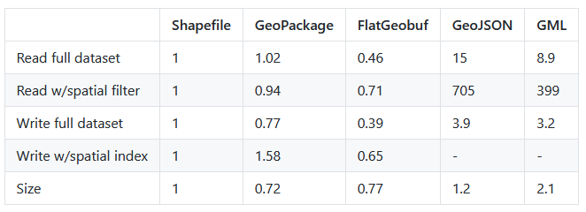

This is a showcase of some of the projects that I have worked on in the last year.
This demonstration highlights the I/O efficiency of the Flatgeobuf binary-coded format. The multipolygon data from OSM is stored in a PostgreSQL database with indexing and sequential scanning enabled. Flatgeobuf is also easily transformed to other geospatial formats such as GeoJSON, GML, GeoPackage etc for ease of delivering data to the user. Caching has been disabled for the demonstration.
Stack: Python (Flask) and JavaScript, deployed on Heroku.
Statistics borrowed from FlatGeobuf.org. FlatGeobuf's superior I/O capabilities and compact file size make it an ideal choice for organizations aiming to optimize the efficiency of their web applications while minimizing database storage requirements.
A brief description of the second project. Explain what it does, the technologies used, and any other relevant information.
A brief description of the third project. Explain what it does, the technologies used, and any other relevant information.